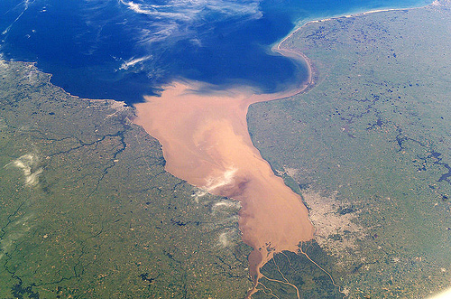

Cultivo y plantación de la yerba mate
En Argentina la yerba mate se utiliza para preparar una bebida que se llama ‘yerba mate’. La bebida es una infusión similar a un té.
Región de origen, suelo y clima de la yerba mate
El área de distribución de la yerba mate es realmente muy restringida. La yerba mate se encuentra en estado silvestre o en plantaciones cultivadas en la zona delimitada en el Este por el océano Atlántico y al oeste por el Río Paraguay.
La yerba mate es una planta típica de la Cuenca del Alto Paraná, Alto Uruguay y de algunos afluentes del río Paraguay. Como es una planta subtropical o tropical, la planta requiere de elevadas temperaturas, mucho porcentaje de humedad en la tierra y el ambiente. Todas estas características se encuentran en las zonas del Alto Paraná en Uruguay. En esta zona hay abundancia de bosques y cursos de agua para satisfacer los cultivos de la yerba mate porque necesitan mucha agua. La planta necesita unos 1.500 milímetros de lluvia anuales. 
La temperatura en la zona yerbatera oscila entre los 15,5º C y los 25,5º C. La temperatura la óptima para el cultivo de yerba mate es entre 20º C y 23º C.
La planta de yerba mate crece muy bien en los suelos areno-arcillosos y arcillo-arenosos. Estos suelos son ricos en ácidos fosfóricos, en potasio y en hierro. Además, la planta prefiere suelos profundos y frescos.
Las tierras coloradas de la Provincia de Misiones, en la República Argentina, están sumamente cargadas de óxido de hierro, y por esto son las mejores zonas para el desarrollo que la planta de yerba mate requiere.
Cultivo de la yerba mate
Debido a las condiciones agrarias y ecológicas necesarias para su desarrollo, en Argentina sólo puede cultivarse la planta de yerba mate en dos provincias: Misiones y Corrientes.
El cultivo de la yerba mate comienza con la siembra, realizada entre los meses de febrero y marzo. La germinación es dificultosa ya que el 80% de las semillas están constituidas por tegumentos y sólo el resto por el endosperma y la radícula. Luego de aproximadamente seis meses se seleccionan las plantas mejor desarrolladas y se plantan en macetas entre octubre y noviembre.
La yerba mate requiere temperaturas tropicales y subtropicales y una elevada humedad ambiental, así como frecuentes precipitaciones, alrededor de 1.500 mm anuales, especialmente durante la floración. La temperatura óptima para la planta de yerba mate es de un promedio de 20º C, pero